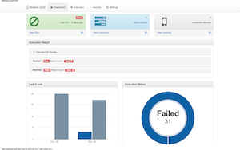

Mobile Grid
Mobile Testing grid (mgrid) helps to execute mobile automation tests in actual devices simultaneously. This tool currently helps to execute tests written in tools like frank, calabash, appium ( cucumber based tests) and consolidate the results in a central place.
Mgrid also supports execution of tests via http which helps to run the test in different mobile networks ( in different countries ) by controlling and monitor the tests from one location.
Mobile Grid server requires Node.js. Follow the below steps to install in local server.
$ git clone https://github.com/jijeshmohan/mgrid.git
$ cd mgrid
$ npm install
$ grunt migrate
$ npm start